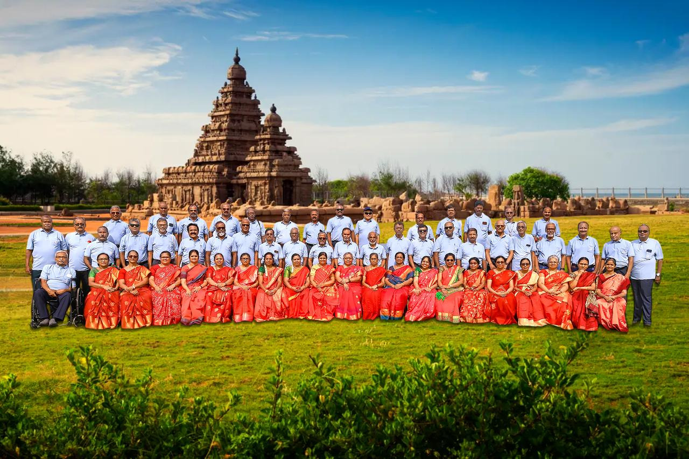

The MVC Class of 1976, comprising those who entered the portals of Madras Veterinary College fifty years ago, came together to commemorate the 50th anniversary of their entry into this great institution.
Dr. L. Gunaseelan and Dr. K. Kumanan, along with their spouses and batchmates, assembled at Coral Beach Resort near Mahabalipuram on 20 July 2026. Almost all the participating batchmates were accompanied by their respective spouses, adding warmth and fellowship to the memorable occasion.
Following two enjoyable days of fellowship, recreational activities and visits to places of interest around Mahabalipuram, the group visited Madras Veterinary College on 22 July 2026. The visit included nostalgic photo sessions and an opportunity to meet some of their former teachers. The teachers were introduced and honoured at a gathering held in the college conference hall.
The reunion was meticulously planned and executed by Drs. Kumanan, Rukmangathan, Ashok Kumar, Rajeshswaran and Diwakar, with close coordination from Dr. Diwakar Ambrose of Canada and Drs. Natarajan and Radhakrishnan from the United States.
The Golden Jubilee reunion became a nostalgic journey shared not only by the batchmates but also by their spouses. More than 60 batchmates and spouses participated in the celebrations, which concluded with a lunch hosted by Dr. B. Nagarajan.

